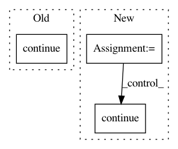

956268db11e19b28ce4e9b75a38862694f397090,chainercv/links/model/fpn/head.py,Head,__call__,#Head#Any#Any#Any#,40
Before Change
self.xp.empty((0, self._n_class, 4), dtype=np.float32)))
confs.append(chainer.Variable(
self.xp.empty((0, self._n_class), dtype=np.float32)))
continue
roi_iltrb = self.xp.hstack(
(roi_indices[l][:, None], rois[l][:, [1, 0, 3, 2]])) \
.astype(np.float32)
After Change
hs_ = []
for l, h in enumerate(hs):
if len(rois[l]) == 0:
continue
F.roi_average_align_2d(
h, rois[l], roi_indices[l], self._roi_size, self._scales[l])
hs_.append(h)
hs = hs_
In pattern: SUPERPATTERN
Frequency: 4
Non-data size: 3
Instances
Project Name: chainer/chainercv
Commit Name: 956268db11e19b28ce4e9b75a38862694f397090
Time: 2018-12-11
Author: Hakuyume@users.noreply.github.com
File Name: chainercv/links/model/fpn/head.py
Class Name: Head
Method Name: __call__
Project Name: OpenNMT/OpenNMT-py
Commit Name: fc9eb2a1d52e456543eb5c592932acc40180af87
Time: 2017-04-25
Author: jean.senellart@systrangroup.com
File Name: preprocess.py
Class Name:
Method Name: makeData
Project Name: deeppomf/DeepCreamPy
Commit Name: 6b1468956dd574a34041f782101f9a5cc3bb173c
Time: 2019-06-18
Author: donald.carlsson@paranta.se
File Name: decensor.py
Class Name: Decensor
Method Name: decensor_image
Project Name: NifTK/NiftyNet
Commit Name: 4a501aff2b763bf401d2ba09888063202c7d3252
Time: 2017-08-31
Author: wenqi.li@ucl.ac.uk
File Name: niftynet/layer/pad.py
Class Name: PadLayer
Method Name: layer_op